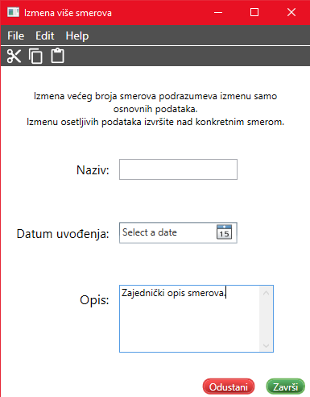

Izmena smerova
Prilikom izmena više smerova, nije potrebno popuniti sva polja, već samo ona koja želite da menjate.

Polje za naziv smera treba da sadrži naziv smera, koje će biti zajedničko za sve odabrane smerove.
Datum uvođenja predstavlja datum uvođenja smera. Datum je moguće odabrati klikom miša na željeni dan ili
uz pomoć strelica na tastaturi i pritiskom dugmeta Enter. Ukoliko ga postavite na neku vrednost, svi označeni smerovi
će imati odabrani datum uvođenja.
U polju za opis se unosi opis smerova, koji će postati zajednički svim označenim smerovima.
Da bi podaci ostali sačuvani kliknite Završi ili prečicu Ctrl+S.
Ukoliko želite da odustanete od izmene, potrebno je kliknuti na Odustani ili prečicom na tastaturi
Ctrl+Q.
Link do početnog prozora za pomoć: Početna stranica